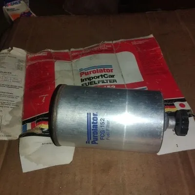
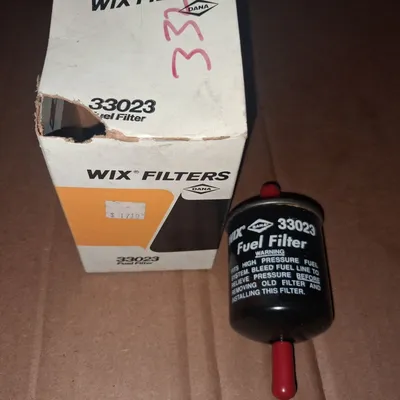
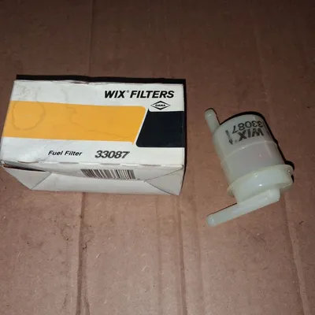
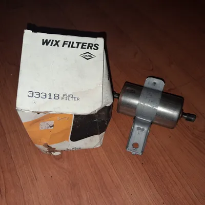
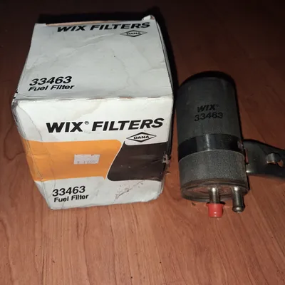
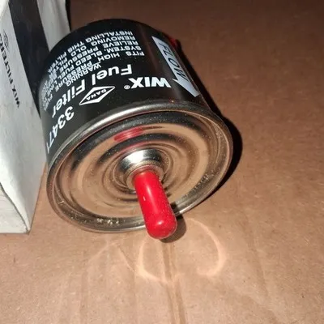
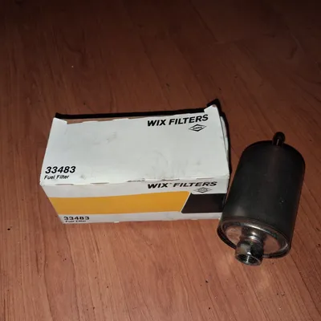

Fuel Filter
FRAM CG-20 Fuel Filter Cartridge 63-66 Ford Falcon Fairlane Mercury Comet GF-157
CG-20
Fits 1962-1966 Ford Fairlane · 1963-1966 Ford Falcon (182 listed)
$13.99
View details25 parts in Fuel Filters from WIX, FRAM and Purolator and more, each with photos, part numbers and condition on its own page. Open a part to see every vehicle it is listed for.
25 parts
Online checkout through Square. Ships from Carbondale, PA, or pick up by confirmed appointment only. Fitment question? Message us.
CG-20
Fits 1962-1966 Ford Fairlane · 1963-1966 Ford Falcon (182 listed)
$13.99
View details
FCG-152
Fits 1990-1993 Volvo 240 · 1985-1986 Volvo 740 (6 listed)
$24.99
View details
33023
Fits 1991-1996 INFINITI G20 · 1996-1999 INFINITI I30 (506 listed)
$20.99
View details
33046
Fits 1966-1976 Ford Bronco · 1966-1982 Ford Mustang (3000 listed)
$20.99
View details
33049
Fits 1977-1978 Ford Bronco · 1977 Ford Custom 500 (374 listed)
$12.99
View details
33051
Fits 1976-1980 Chevrolet Camaro · 1976-1980 Chevrolet Impala (2380 listed)
$13.99
View details
3I1183
Fits 1975-1983 Chrysler Cordoba · 1983-1989 Chrysler Fifth Avenue (552 listed)
$12.99
View details
33063
Fits 1981-1984 Buick Regal · 1979-1984 Cadillac Eldorado (799 listed)
$26.99
View details
33087
Fits 1971-1987 Dodge Colt · 1976-1980 Plymouth Arrow (311 listed)
$13.99
View details
33293
Fits 1991-1994 Ford Cougar · 1997-2003 Ford Escort (74 listed)
$18.99
View details
WIX 33318
Fits 1990-1997 Dodge Dakota · 1991-1993 Dodge Ramcharger (104 listed)
$22.99
View details
33321
Fits 1988-1993 Dodge (2 listed)
$12.99
View details
33323
Fits 1987-1993 Chrysler Daytona · 1987-1994 Dodge Shadow (24 listed)
$12.99
View details
33324
Fits 1988-1995 Chrysler (3 listed)
$13.99
View details
33330
Fits 1988-1991 Honda CRX · 1988-1991 Honda Civic (34 listed)
$12.99
View details
33460
Fits 1988-1989 Honda Accord (20 listed)
$12.99
View details
33463
Fits 1985-1987 Chrysler · 1985-1987 Dodge (6 listed)
$15.99
View details
33470
Fits 1987-1988 Dodge Colt · 1987-1989 Dodge Ram 50 (56 listed)
$21.99
View details
33471
Fits 1983-1984 Subaru Brat · 1983-1989 Subaru DL (107 listed)
$17.99
View details
33479
Fits 1986-1989 Honda Accord · 1988-1990 Honda Prelude (41 listed)
$21.99
View details
33483
Fits 1982-1988 Chevrolet Celebrity · 1982-1988 Oldsmobile Cutlass Ciera (5 listed)
$16.99
View details
33486
Fits 1986-1996 Jeep Cherokee · 1986-1992 Jeep Comanche (329 listed)
$22.99
View details
33489
Fits 1990-1991 Chevrolet Beretta · 1990-1991 Chevrolet Corsica (34 listed)
$16.99
View details
33490
Fits 1982-1985 Chrysler LeBaron · 1982-1985 Dodge Aries (185 listed)
$17.99
View details
33502
Fits 1992-2001 Toyota Camry · 1995 Chrysler Sebring (399 listed)
$19.99
View details